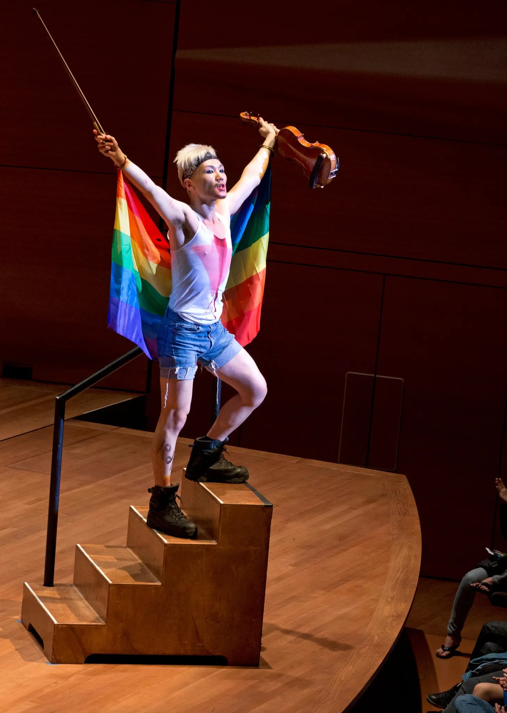

Hahn-Bin at MoMA - "Soliloquy for Andy Warhol"
───
"Blood, Sweat, Tears and Tchaikovsky" at Lincoln Center

The New York Times
Hahn-Bin post-performance
(Photo: Derek Blasberg)
 Hahn-Bin with Lou Reed and Itzhak Perlman post-performance
Hahn-Bin with Lou Reed and Itzhak Perlman post-performance
Hahn-Bin with Lou Reed and Itzhak Perlman post-performance
───
NOWNESS - "The Renaissance of Hahn-Bin"

───
Yoko Ono's Meltdown Festival - BBC
 BBC.co.uk
BBC.co.uk───
Hahn-Bin at Carnegie Hall - NBC Today Show
───
Zigeunerweisen from "Till Dawn Sunday"
───
Vogue.com - Backstage with Hahn-Bin
 Vogue.com
Vogue.com───
"Tzigane" at MoMA - Artforum
───
The New Yorker - "Eye on Culture: Hahn-Bin"
 The New Yorker
The New Yorker───
Hahn-Bin by Bruce Weber - Vogue Spain
───
Madonna - "Beautiful Killer"
───